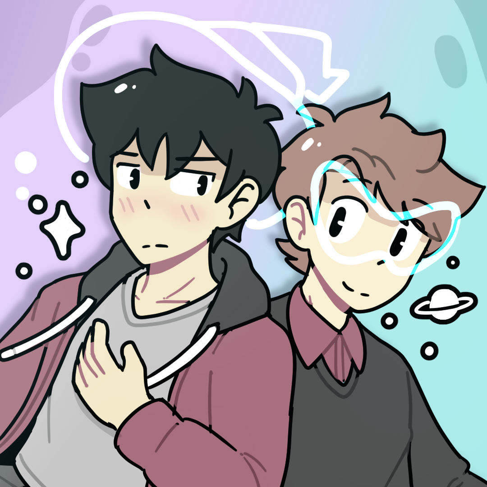

Warp Speed and Witchcraft
Ongoing
A witch boy from another realm and a space explorer from the far future live together in an apartment.

WEBTOON CANVAS
Clip Studio Paint
Details
Warp Speed and Witchcraft is a slice-of-life and romance webcomic updated weekly. It has a unique and humorous cast of magical and futuristic
characters, getting into modern day antics. It currently boasts a subscriber count of over 25K, and regularly reaches the Top 30 WEBTOON CANVAS
Slice of Life series every week.